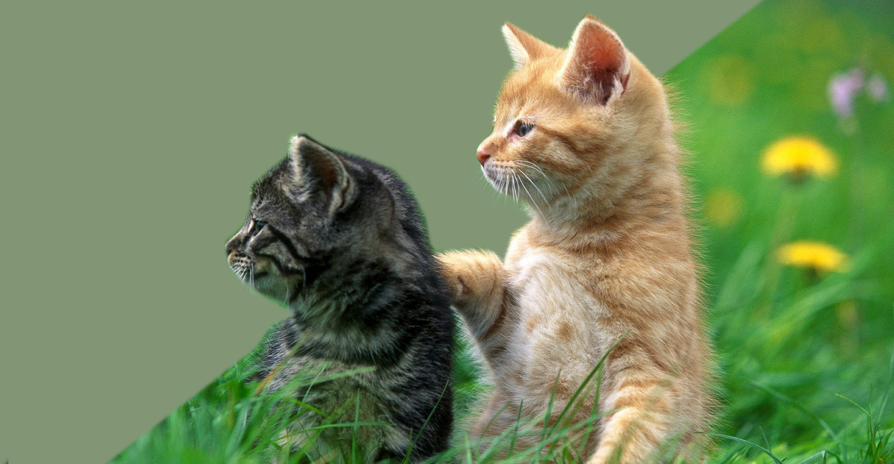

Один из лучших Зоосалонов
Ваш питомец скажет "Спасибо!"

Каждому нужен уход, даже вашему зверьку.
Каждому нужен уход, даже вашему зверьку.
Поход к груммеру помогает тщательно следить
за гигиеной домашнего животного, обеспечивает
комфортную жизнь вашему питомцу.
К сожалению в повседневной жизни не всегда
возможно оказать животному должный уход,
поэтому мы гарантируем,
что сделаем это
качественно и безопастно!)
Наши груммеры


Те, кого мы смогли осчастливить